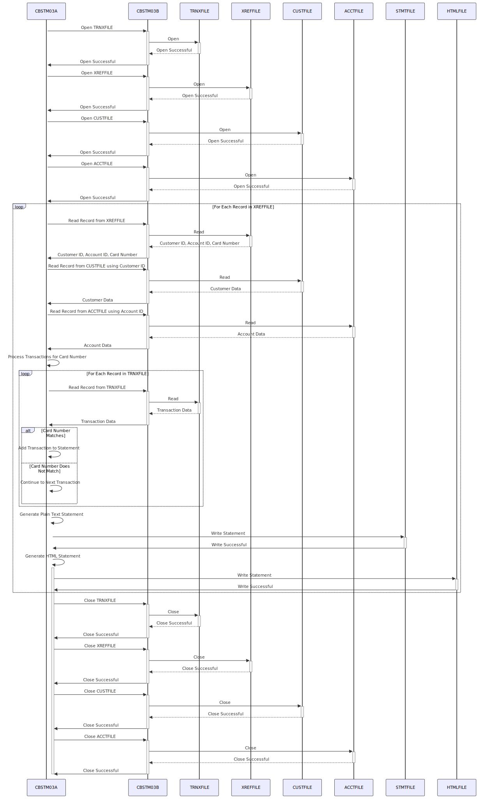

–CONTENT TO TRANSLATE–
Gerado em: 1 de outubro de 2024
Título do Documento: Gerador de Extrato de Conta CardDemo - Especificação do Programa
Descrição Resumida:
O programa Gerador de Extrato de Conta CardDemo (CBSTM03A.CBL) é um processo em lote que gera extratos de conta para portadores de cartão de crédito. O programa lê dados do cliente, conta e transação de vários arquivos de entrada, realiza cálculos e gera extratos em formato de texto simples e HTML.
Histórias do Usuário:
Como analista de dados, preciso garantir que apenas registros válidos sejam usados na análise financeira, portanto, preciso de um programa que possa ler e validar dados de várias fontes e gerar extratos de conta precisos.
Épico Relacionado:
4 - Processamento de Transações
Requisitos Funcionais:
- O programa deve ler os dados do cliente do
CUSTFILE.
- O programa deve ler os dados da conta do
ACCTFILE.
- O programa deve ler os dados da transação do
TRNXFILE.
- O programa deve validar se os dados da transação estão corretamente associados aos dados do cliente e da conta.
- O programa deve calcular as despesas totais de cada conta com base nos dados da transação.
- O programa deve gerar extratos de conta em formato de texto simples, aderindo a um layout predefinido.
- O programa deve gerar extratos de conta em formato HTML, adequados para visualização online.
- O programa deve lidar com operações de E/S de arquivo, incluindo abertura, leitura, gravação e fechamento de arquivos.
- O programa deve implementar mecanismos de tratamento de erros para gerenciar problemas como dados inválidos ou erros de arquivo.
Regras de Negócio:
- Integridade de Dados: O programa garante que os dados de diferentes fontes (
CUSTFILE, ACCTFILE, TRNXFILE) sejam combinados e apresentados com precisão. Por exemplo, ele garante que as transações estejam vinculadas à conta e ao cliente corretos.
- Clareza e Transparência: A declaração gerada foi projetada para ser fácil de entender, fornecendo uma visão geral clara de toda a atividade da conta.
- Flexibilidade: Ao produzir versões em texto simples e HTML, o programa atende a diferentes preferências e métodos de entrega.
Requisitos Não Funcionais:
- Desempenho: O programa deve processar grandes volumes de transações com eficiência dentro de um prazo razoável.
- Confiabilidade: O programa deve operar de forma confiável, produzindo resultados precisos e consistentes.
- Manutenção: O código do programa deve ser bem estruturado, documentado e fácil de entender e manter.
- Segurança: O programa deve lidar com dados financeiros confidenciais com segurança, incorporando controles de acesso e criptografia de dados conforme necessário.
Critérios de Aceitação:
- O programa lê e processa com sucesso os dados do cliente, conta e transação dos arquivos de entrada.
- O programa valida corretamente a integridade dos dados, garantindo que as transações estejam vinculadas aos clientes e contas corretos.
- O programa calcula com precisão as despesas totais de cada conta com base no histórico de transações.
- O programa gera instruções de texto simples e HTML que aderem aos layouts especificados.
- O programa lida com erros normalmente, registrando problemas e saindo normalmente sem corrupção de dados.
Melhorias de Código:
- Tratamento de Erros: Aprimore o tratamento de erros fornecendo mensagens de erro mais específicas e implementando um mecanismo centralizado de registro de erros.
- Documentação: Melhore a legibilidade e manutenção do código adicionando mais comentários em linha explicando a lógica complexa e as estruturas de dados.
- Otimização de Desempenho: Investigue gargalos de desempenho, potencialmente usando técnicas de classificação ou indexação para grandes conjuntos de dados.
Melhorias de Segurança:
- Permissões de Arquivo: Implemente permissões de arquivo rígidas para restringir o acesso a arquivos de dados confidenciais.
- Criptografia de Dados: Considere criptografar dados confidenciais em repouso e em trânsito para proteger as informações do cliente.
- Auditoria: Implemente um trilha de auditoria para rastrear a execução do programa, acesso a dados e quaisquer modificações feitas em dados confidenciais.
Diagrama Conceitual:

–Made by “Smart Engineering” (by Compass.UOL)–